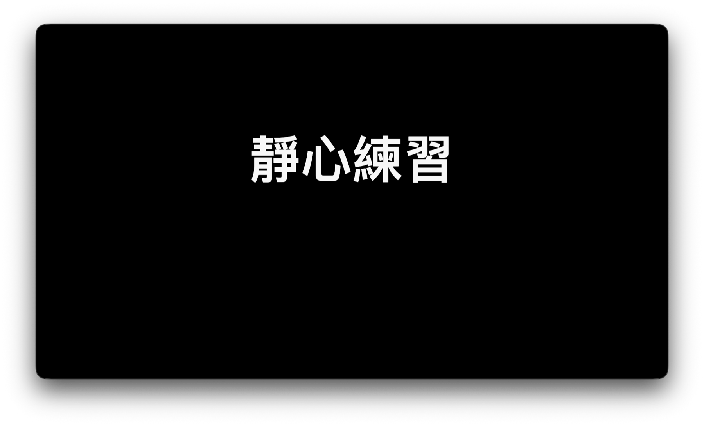
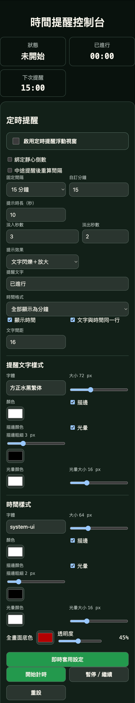
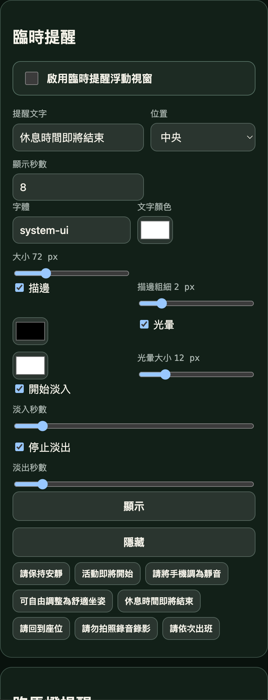
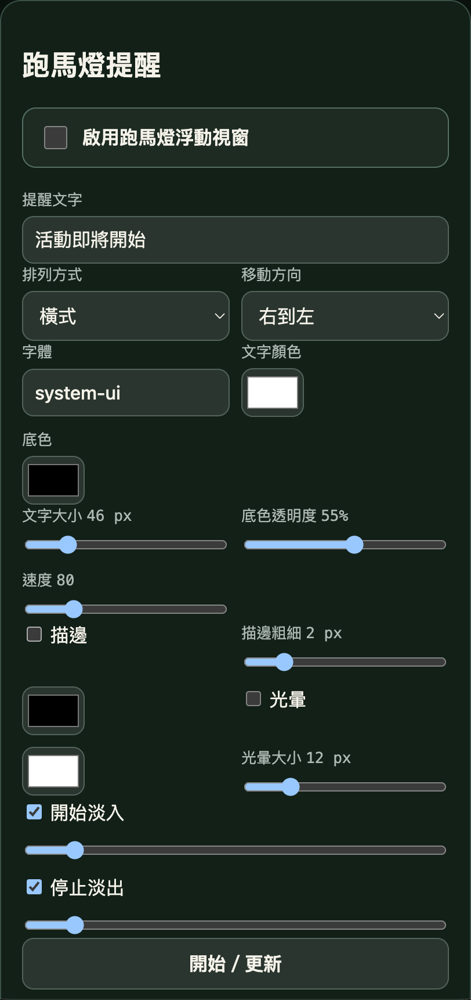
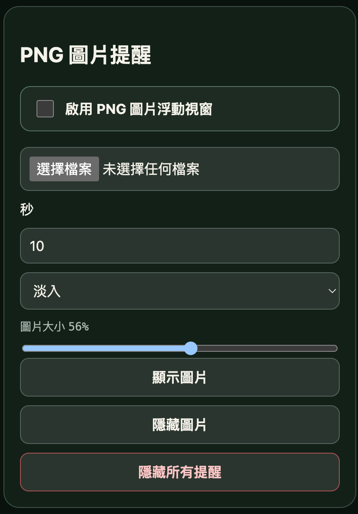
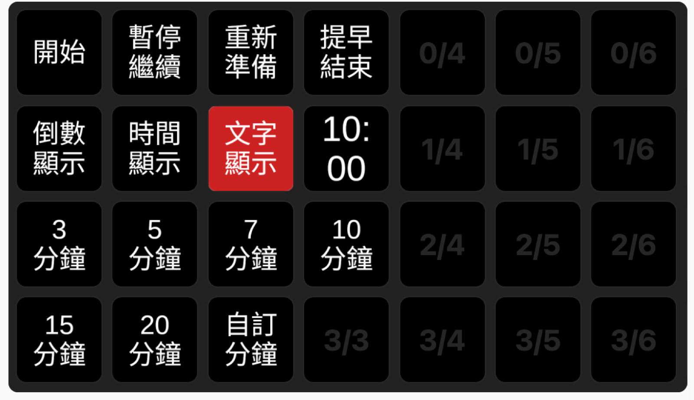
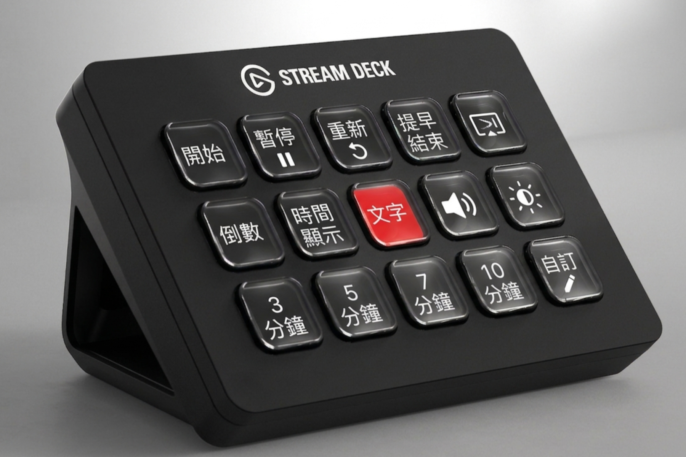

乾淨的 16:9 參與者畫面
無邊框、可移動、可置頂，適合直接在 Zoom 分享。文字、倒數與目前時間皆能獨立顯示與定位。
為帶領者而生的靜心工具
把計時、畫面、音樂與磬聲交給 ZenTime。你只需要專注在呼吸、語氣，以及眼前的人。
支援 macOS Apple Silicon、Intel 與 Windows 10／11


分享給參與者的，永遠是一個乾淨、安定、不受干擾的畫面。
」一個畫面給參與者，一個控制台留給你
無邊框、可移動、可置頂，適合直接在 Zoom 分享。文字、倒數與目前時間皆能獨立顯示與定位。
3、5、7、10、15、20 分鐘快速預設，也能自訂時間。圓環或直線進度隨靜心時間穩定增長。
內建磬聲，支援自訂開頭、結尾與背景音樂。可單曲循環或建立播放清單，並獨立調整音量。
透過網頁、macOS 選單列、Windows 系統匣或 Bitfocus Companion，開始、暫停與切換顯示都不必回到控制台。
自訂背景顏色、漸層或圖片；主文字、倒數與目前時間可分別選擇電腦中的本機字體。
把參與者視窗移到投影螢幕，連按兩下立即全螢幕；再次連按兩下，回到原本位置與大小。
定時、臨時文字、橫直式跑馬燈與 PNG 圖片各自使用浮動視窗。支援淡入淡出、動畫、本機字體、向外描邊與即時預覽。
同一個網頁控制頁可操作靜心與完整提醒設定；macOS 選單列、Windows 系統匣與 Companion 也能開始、暫停、觸發或隱藏提醒。
TIME REMINDER
它不是另一個倒數計時器，而是一套獨立的現場提示系統。提醒在需要前自然淡入、到點清楚出現，再安靜退場；你不必打斷流程，也不必反覆查看時間。
效果示意
浮動視窗置頂但不干擾內容，需要時才出現。
提前進場，主持人不會被突然跳出的畫面打斷。
閃爍、放大或全螢幕半透明色彩，強度由你決定。
現場畫面回到原狀，下一個間隔繼續自動計時。
四個獨立提醒視窗
各自啟用、各自設定，也能同時使用。




跨平台支持：
開始、暫停、立即提醒與取消顯示，都能在你慣用的平台完成。
真實 App 畫面



下載 ZenTime
選擇你的電腦版本。下載後即可使用，不需建立帳號。
macOS
適用 M1、M2、M3、M4 與後續 Apple 晶片 Mac。
下載 DMGmacOS
適用搭載 Intel 處理器的 Mac 電腦。
下載 DMGWindows 10／11 · 1.2.2
建議一般使用者選擇，安裝後從開始選單開啟。
下載 EXEWindows 10／11 · 1.2.2
直接開啟即可使用，適合放在隨身碟攜帶。
下載 EXEDocker／NAS
用瀏覽器開啟主持台、參與者畫面與完整時間提醒控制，並支援 Companion API。
下載 Docker 套件進階現場控制
0.6.0 新增時間提醒的開始與暫停／繼續。跑馬燈按鈕會在顯示時呈現紅底白字，再按一次即可取消，不必另找停止鍵。
macOS 首次開啟方式
xattr -dr com.apple.quarantine 畫面會類似：xattr -dr com.apple.quarantine "/Users/你的名稱/Downloads/靜心主持台.app"
此步驟只需對你信任、且由本網站下載的 ZenTime 安裝檔操作。